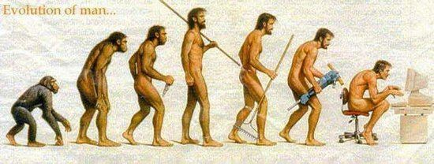
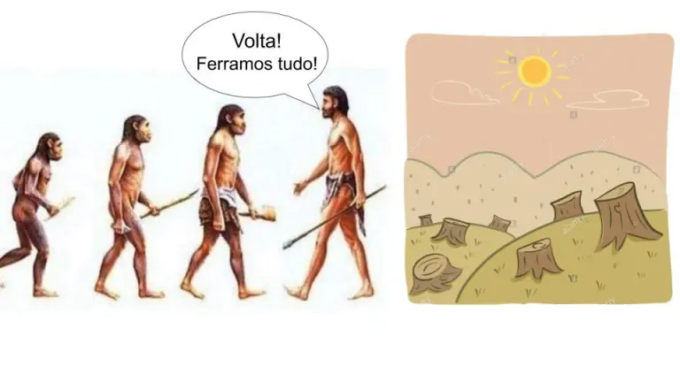
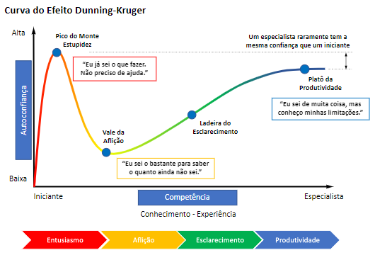

Bem-vindos à Aula Perfeita™
(Alerta de Spoiler: Não Existe)
"Quantas vezes você já se perguntou se está realmente aprendendo ou só passando pelas aulas?"
O que esperamos de uma aula convencional
- Professor onisciente
- Alunos sempre atentos e motivados
- Conteúdo 100% relevante para o resto da vida
- Ninguém olhando o celular (nem o professor)
Estamos dispostos a abrir mão dessa fantasia e abraçar uma aprendizagem autêntica?
A Realidade Chocante
"Quem nunca viajou durante uma aula?"
E se essa "viagem" pudesse nos levar a lugares mais interessantes que o conteúdo programático?
Por que estamos aqui afinal?
- Diploma na parede
- Agradar os pais
- Evitar o mercado de trabalho por mais alguns anos
- Todas as anteriores
Se você escolheu 'Todas as anteriores', está tudo bem! Mas vamos descobrir juntos se há algo mais que podemos ganhar aqui.
Plot Twist: E se a educação fosse sobre... aprender?
Modernismo, Pós-modernismo e Meta-pós-modernismo na educação
"Aprender é mudar de comportamento. Se não mudou, você não aprendeu."
Modernismo: Quando achávamos que sabíamos tudo
Você já estudou só para decorar e passar na prova?
Pós-modernismo: Oops, não sabemos nada
Você já questionou profundamente por que faz o que faz?
Meta-pós-modernismo: Sabemos que não sabemos, e tudo bem
Você está pronto para abraçar a incerteza como parte do seu crescimento?
O Engenheiro do Futuro: Mais do que apenas calcular
- Diplomacia (para lidar com clientes impossíveis)
- Criatividade (para explicar por que o projeto está atrasado)
- Filosofia (para questionar se a ponte realmente precisa existir)
- Inteligência Emocional (para gerenciar equipes, lidar com pressão e construir relacionamentos que realmente importam)
Contextualização Institucional
## TO-DO ##
(Esta parte será personalizada com dados específicos da instituição)
Como nossa instituição pode ser um laboratório para essas ideias?
Dimensão Tecnológica
IA e Tecnologia na educação, um assunto tão delicado quanto um rinoceronte numa loja de cristais!
Evidências Emergentes: IA está transformando a educação
Harvard University, 2024: Tutores de IA resultam em aprendizado duas vezes maior em menos tempo que aulas ativas convencionais
World Bank, 2025: Programa de tutoria com IA na Nigéria demonstrou ganhos equivalentes a dois anos de educação em apenas seis semanas
O que diz a ciência sobre IA na educação?
Estudo de Harvard: Ganhos de aprendizado mais que duplicaram com tutoria de IA
70% dos estudantes completaram o aprendizado em menos tempo que a aula tradicional
Benefício mais significativo: estudantes relataram maior engajamento e motivação
Mitos vs. Realidade sobre IA na educação
| Mito | Realidade (Baseada em Evidências) |
|---|---|
| "IA é apenas um atalho para trapacear" | IA projetada pedagogicamente aumenta engajamento e resultados de aprendizagem |
| "IA beneficia apenas alunos avançados" | No estudo nigeriano, todos se beneficiaram, com meninas e estudantes de menor desempenho inicial tendo os maiores ganhos |
| "Tecnologia apenas distrai da verdadeira aprendizagem" | IA personalizada permite que estudantes aprendam no seu próprio ritmo, com feedback imediato |
| "IA substituirá professores" | Os melhores resultados sugerem IA como complemento: preparação antes da aula, liberando tempo em sala para atividades avançadas |
Referências
Kestin, G., Miller, K., et al. (2024). AI Tutoring Outperforms Active Learning. Research Square. DOI: https://doi.org/10.21203/rs.3.rs-4243877/v1
De Simone, M.E., Tiberti, F., et al. (2025). From chalkboards to chatbots: Transforming learning in Nigeria, one prompt at a time. World Bank Blogs. Education for Global Development.
O Elefante na Sala: Trauma Acadêmico
Quando experiências passadas condicionam o presente
"Lembra daquela prova que fez você acreditar que não era bom o suficiente?"
O que é Trauma Acadêmico?
"Resposta emocional negativa a experiências educacionais anteriores que interfere na sua capacidade atual de aprendizado"
Manifestações comuns:
- Ansiedade desproporcional em disciplinas específicas
- Autossabotagem ("Eu não sou bom em matemática")
- Evitação de certos tópicos ou situações de aprendizado
Você já sentiu que uma disciplina simplesmente não era para você?
A Dimensão Emocional do Trauma Acadêmico
66,9% dos universitários brasileiros relatam transtornos mentais comuns
Você não está sozinho:
- Ansiedade pré-avaliações é quase universal
- Síndrome do impostor afeta até os "melhores alunos"
- Perfeccionismo paralisa mais do que motiva
Você já parou para pensar que talvez o problema não seja você, mas a forma como estamos aprendendo?
A Estatística que Ninguém Conta
Na UERJ, em 2022:
- 10,3% das inscrições resultaram em reprovação por nota
- 12,3% em reprovação por frequência (abandono)
Isso significa: mais pessoas desistem do que tentam até o fim e falham
Esses números não precisam definir sua trajetória acadêmica.
Não é Você, é o Sistema
Disciplinas com maiores índices de reprovação:
- Cálculo
- Física
- Química
- Estatística
Estas são disciplinas-filtro históricas
Não foram desenhadas para medir seu potencial, mas para atender a tradições acadêmicas do século passado
E se essas disciplinas fossem desafios que te fazem crescer, em vez de obstáculos intransponíveis?
Tempo: O Recurso Não-Renovável
A moeda mais valiosa da sua vida acadêmica
Visualizando o Invisível: Seu Tempo
"Não tenho tempo para estudar" vs. "Não priorizei o estudo no meu tempo"
Você já percebeu quanto tempo perde simplesmente por não planejar?
Sua Semana em Blocos
Você recebe exatamente 168 horas por semana. Nem uma a mais.
- 56 horas para dormir (8h/dia)
- ??? horas para transporte (varia por aluno)
- ??? horas para aulas (depende da sua grade)
- 21 horas para refeições (3h/dia)
- 3-5 horas para atividade física
Cálculo: 168h - 56h (sono) - 21h (refeições) - 5h (atividade física) = 86 horas
Seu desafio: como distribuir essas 86 horas entre aulas, transporte, estudo e lazer?
Seu tempo é valioso. Investi-lo estrategicamente pode mudar tudo.
A Matemática do Tempo de Estudo
Regra prática: para cada 1 hora de aula, reserve 2-3 horas de estudo
Para uma disciplina de 4 horas semanais:
- 4 horas presenciais
- + 8-12 horas de estudo extraclasse
- = 12-16 horas semanais por disciplina
Multiplicar isso por 5-6 disciplinas... Você consegue ver o problema?
Como você pode reorganizar sua rotina HOJE para ter sucesso AMANHÃ?
A Curva da Persistência
Por que a primeira avaliação não define seu destino
O Grande Equívoco
"O mito do progresso linear: cada aula te deixa mais inteligente"
A Realidade do Aprendizado
"Aprendizado real: quedas, platôs e saltos inesperados"
A jornada real do aprendizado é cheia de altos e baixos, uma verdadeira montanha russa. Cada queda é uma oportunidade para voltar mais forte.
Por Que Tantos Desistem na Primeira Dificuldade?
Dados da UERJ mostram:
- ~40% dos estudantes que reprovam em disciplinas introdutórias abandonam o curso
- 57,2% é o índice nacional de evasão acumulada no ensino superior
- A maioria das desistências ocorre após resultados negativos iniciais
Quem persiste frequentemente se recupera, mas nunca descobre isso quem desistiu cedo demais
Você está disposto a continuar, mesmo quando não for fácil?
"Quem não está adiantado está atrasado"
Estudar na véspera significa competir com seu eu do passado que não te ajudou
Você está simultaneamente tentando aprender e lutando contra a ansiedade do prazo
Persistir é transformar desafios em conquistas. Você decide até onde vai sua jornada.
Como sobreviver (e até aprender algo) na universidade
Dicas que ninguém te conta (mas deveria)
O efeito Dunning-Kruger: Quando você acha que é o próximo Einstein
"Se você acha que entendeu tudo na primeira aula, provavelmente não entendeu nada"
O segredo que ninguém te conta
"A universidade não é só sobre aprender conteúdo. É sobre aprender a aprender"
Dica: Desenvolva metacognição. É como ter superpoderes, mas para o cérebro
O que é metacognição?
Metacognição é a capacidade de refletir sobre e controlar os próprios processos cognitivos. Envolve o conhecimento sobre como aprendemos e pensamos, bem como a habilidade de monitorar e regular essas atividades mentais. Isso inclui a consciência de nossas estratégias de aprendizado, a capacidade de avaliar nosso progresso e a capacidade de ajustar nossas abordagens de acordo com a necessidade.
O Vale da Aprendizagem Profunda

"O momento em que seu desempenho cai pode ser justamente quando você está transitando do conhecimento superficial para o profundo"
Reescrevendo Sua História Acadêmica
| Narrativa Limitante | Narrativa Capacitante |
|---|---|
| "Não tenho cabeça para matemática" | "Ainda não encontrei o método certo para aprender matemática" |
| "Sou péssimo em provas, sempre travo" | "Estou desenvolvendo novas estratégias para situações de avaliação" |
| "Meu cérebro não funciona para teorias abstratas" | "Aprendo melhor quando conecto teorias abstratas a exemplos concretos" |
O Que Não Te Contaram Sobre o Trauma
Muitos dos seus professores já passaram por isso
1.371 alunos-mestres monitores na UERJ em 2022
Eles se tornaram especialistas justamente no que um dia acharam difícil
"Disciplina é Liberdade"
Sem Planejamento
- Ansiedade constante sobre o que falta fazer
- Estudar vira uma "dívida emocional"
- Cada imprevisto é uma crise
- Compromissos sociais trazem culpa
- Véspera de prova = pânico
Com Planejamento
- Clareza sobre o que está feito e pendente
- Descanso real sem culpa
- Imprevistos têm margem de manobra
- Conhecimento construído gradualmente
- Véspera de prova = revisão tranquila
O paradoxo digital: entre o aumento e a dependência
"A tecnologia deve amplificar sua mente, não substituí-la"
Tecno-metacognição: a arte de saber quando o digital ajuda e quando atrapalha
Dica: Mantenha um diário de uso tecnológico por uma semana - os padrões revelados podem surpreender
Seja um meta-pós-moderno e crie sua própria narrativa heroica
"Você é o protagonista da sua história acadêmica. Escolha seu enredo sabiamente!
Dica: Encontre seu 'porquê' pessoal. Pode ser 'salvar o mundo' ou 'comprar um carro'. Esse enredo pode ser duvidoso e questionável, sinta-se à vontade."
Seu ambiente importa
(não, não estamos falando do seu quarto bagunçado)
Seu ambiente importa
"Seu cérebro é como uma planta. Precisa do ambiente certo para não murchar"
Dica: Encontre seu 'habitat natural' de estudo. Pode ser a biblioteca ou o café mais barulhento da cidade
A corrida acadêmica não é uma maratona para todos
"Seu colega faz 8 matérias por semestre? Ótimo para ele. Você faz 4? Ótimo para você!"
Dica: Conheça seus limites. Ultrapassá-los não te faz um herói, te faz um dropout
Somos uma colmeia acadêmica
"Seus interesses são influenciados pelos outros. Use isso a seu favor!"
Dica: Escolha bem seu grupo de estudo. Eles podem te levar ao topo ou ao bar
O estudante aumentado: como usar tecnologia estrategicamente
| Ferramenta | Quando usar | Quando evitar |
|---|---|---|
| IAs Generativas | Para explorar ideias, gerar hipóteses, simplificar conceitos complexos; como tutor personalizado que respeita seu ritmo individual | Quando precisar de profundidade crítica ou pensamento original |
| IA como tutor pré-aula | Para preparação antes da aula, dominar conceitos básicos, identificar dúvidas | Como substituto para discussões em grupo e trabalhos colaborativos |
| Redes Sociais | Para conectar com comunidades de aprendizado, compartilhar recursos | Durante períodos de estudo focado (dopamina x concentração) |
| Apps de Produtividade | Para organizar estudos, estabelecer rotinas, monitorar progresso | Quando se tornam fins em si mesmos (meta-procrastinação) |
Momento Reflexivo (1 minuto): Qual dessas ferramentas você usa mais? Ela te ajuda ou te atrapalha na maior parte do tempo?
Como ser um usuário crítico de IA
IA promovendo aprendizado
- Solicita que você articule suas dúvidas claramente
- Fornece feedback personalizado e imediato
- Permite que você explore no seu próprio ritmo
- Desafia você com perguntas que aprofundam entendimento
- Simplifica conceitos complexos sem perder precisão
IA oferecendo atalhos
- Fornece respostas prontas sem explicar o raciocínio
- Substitui seu processo de pensamento crítico
- Gera conteúdo que você não compreende totalmente
- Apresenta "alucinações" - informações falsas com confiança
- Incentiva dependência em vez de autonomia intelectual
Momento Reflexivo: Pense em uma matéria onde você está tendo dificuldade. Como poderia usar IA pedagogicamente (não apenas para responder) para melhorar seu aprendizado?
Armadilhas da IA - Quando desligar é inteligente
Alucinações
Informações incorretas apresentadas com confiança pela IA
Dependência
Atrofia de habilidades cognitivas por uso excessivo
Atalhos
Superficialidade em vez de compreensão profunda
Estudo de Harvard (2024): A IA é mais eficaz quando projetada com práticas pedagógicas específicas - nem toda interação com IA é igualmente benéfica
O futuro híbrido da educação
Antes da aula
IA como tutor personalizado:
- Introdução aos conceitos básicos
- Preparação no seu próprio ritmo
- Identificação de dúvidas
- Nivelamento de conhecimentos
Durante/após a aula
Interação humana enriquecida:
- Discussões em grupo aprofundadas
- Resolução de problemas complexos
- Projetos colaborativos
- Feedback personalizado do professor
Mundo real: No estudo nigeriano, o programa de IA complementou (não substituiu) a educação tradicional, resultando em melhorias em exames curriculares além do escopo do programa
"O segredo não é escolher entre tecnologia OU humanos, mas descobrir como combinar o melhor dos dois mundos."
Momento Meta: Exercício Prático de Metacognição
"Vamos praticar o que acabamos de teorizar"
Espelho, espelho meu: 3 minutos de autorreflexão
Em silêncio, reflita sobre uma destas questões:
- Qual foi meu maior desafio acadêmico até hoje e como o superei?
- Em qual ambiente consigo me concentrar melhor e por quê?
- Que estratégia de estudo já tentei e não funcionou para mim?
Use o celular para cronometrar (sim, finalmente uma função útil para ele durante a aula)
Compartilhamento em Pares
Vire-se para a pessoa ao lado (sim, aquela que você não conhece!)
Compartilhe sua reflexão em 1 minuto cada
O que aprendemos sobre nós mesmos também pode ajudar outros
Planilha de Organização Semanal
Uma ferramenta para:
- Visualizar sua semana real
- Identificar tempo "invisível"
- Descobrir se sua carga está adequada
- Planejar estudo consistente

O Momento Decisivo: Duas Trajetórias
Abandono Precoce
- Primeira avaliação negativa
- Confirmação do medo ("Eu sabia que não era para mim")
- Evitação das aulas
- Desistência oficial ou abandono silencioso
- Reforço do trauma para o futuro
Recuperação Resiliente
- Primeira avaliação negativa
- Diagnóstico de lacunas específicas
- Busca ativa por recursos (monitoria, grupos)
- Ajuste de estratégias de estudo
- Recuperação gradual e superação
Estratégias Práticas de Perseverança
- Análise pós-avaliação: transforme notas ruins em informação útil
- Micrometas: divida o monstro em pequenos passos gerenciáveis
- Grupo de resiliência: forme uma aliança com colegas para persistir juntos
- Pacto de não-desistência: comprometa-se a não abandonar sem antes conversar com alguém
Recursos na UERJ para Superar Obstáculos
- Programa Alunos-Mestres: 1.371 monitores para apoio acadêmico
- Núcleo de Apoio Psicopedagógico: suporte para dificuldades de aprendizagem
- Serviço de Psicologia Aplicada: atendimento para questões emocionais
- Coordenações de curso: orientação para planejamento acadêmico
Perseverança não significa sofrer sozinho: use a rede de apoio institucional
Exercício de Visualização
"Imagine que você acabou de receber uma nota baixa na primeira prova..."
Quais seriam seus pensamentos imediatos?
Que ações você tomaria nas próximas 48 horas?
Quem você procuraria para conversar sobre isso?
(Esta não é uma situação hipotética: é quase certo que acontecerá em algum momento)
Plano de Contingência Pessoal
Complete seu próprio plano:
- "Se eu tirar uma nota abaixo da média, eu vou __________"
- "Se eu sentir que não estou entendendo a matéria, eu vou __________"
- "Se eu começar a pensar em desistir, eu prometo primeiro __________"
Ter um plano pré-definido evita decisões impulsivas em momentos de frustração
Exercício: Auditoria de Tempo
Use a planilha para calcular:
- Quantas horas semanais suas disciplinas atuais exigiriam (considerando estudo extraclasse)?
- Quanto tempo você realmente tem disponível?
- Seu plano atual é realista ou você precisa ajustar?
"Sonhar grande é bom, mas planejar com realismo é melhor"
Antes de terminarmos...
Um pequeno exercício de integração
Ticket de Saída (Analógico ou Digital)
Antes de sair, por favor compartilhe:
- Uma ideia que você está levando desta aula
- Uma pergunta que surgiu durante a apresentação
- Uma estratégia que você pretende implementar
Suas respostas ajudarão a moldar nossas próximas discussões
Para Encerrar
"Morrer é não viver a realidade"
Viver a realidade acadêmica é planejar, persistir e crescer através dos desafios.
Discussão Aberta
Perguntas? Comentários? Memes?
Lembrem-se: na era do meta-pós-modernismo, não existem perguntas bobas (apenas professores bobos)